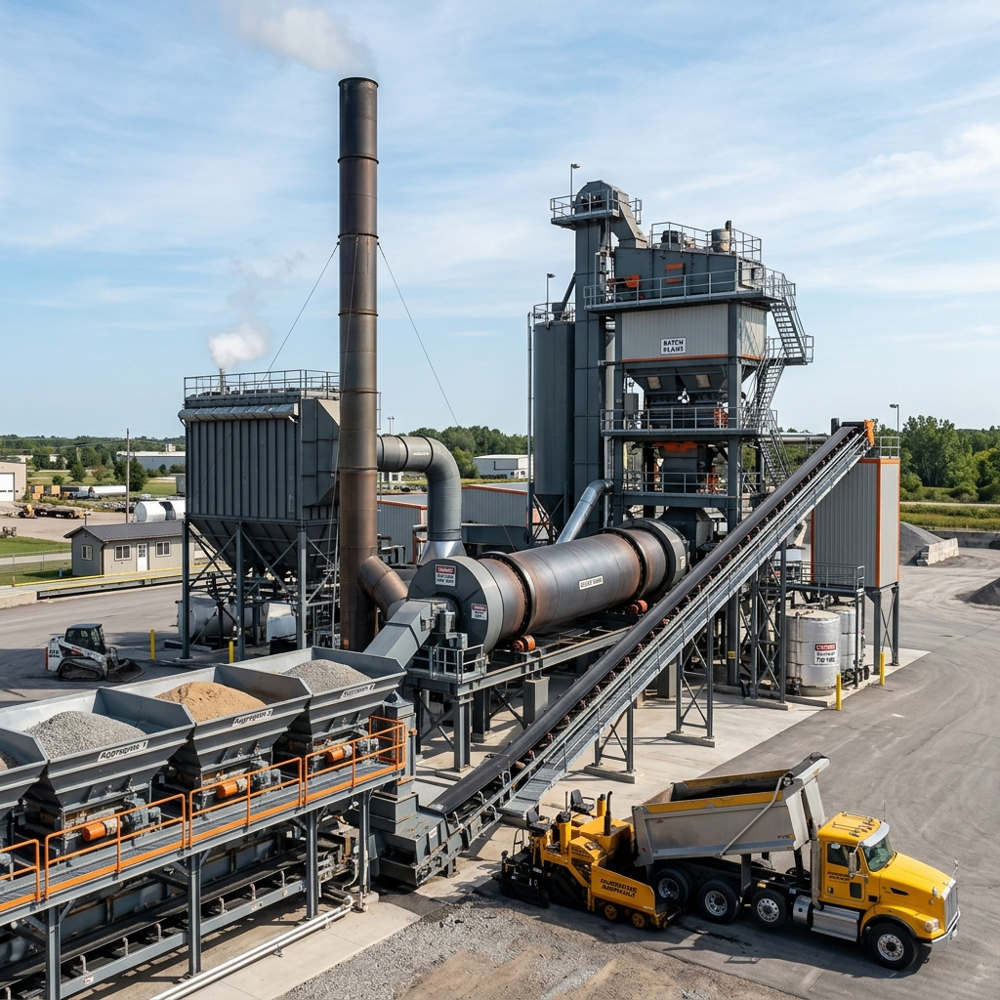
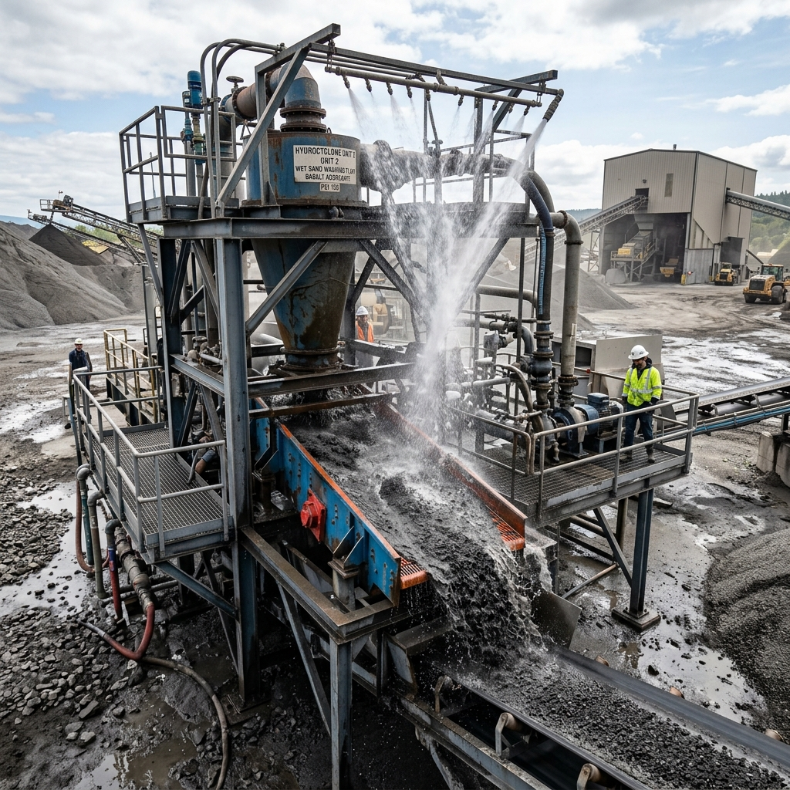

Our Assets
Our high-capacity basalt crushing plant processes heavy blue basalt rocks. It incorporates high-grade primary jaw crushers and secondary cone crushers to achieve continuous material breakdown.
Capacity: 350 Tons/Hour
Fully automated, computerized weigh-batching concrete plant producing M7.5 to M80 concrete grades. Equipped with twin-shaft mixers for perfect mix homogeneity.
Capacity: 120 Cu.M/Hour
Our basalt mining site yields high-density basalt stone resources. Regular survey inspections confirm material density factors, satisfying IRC road base demands.
Basalt Sourcing: Certified Site
High-capacity hot mix batching plant for producing premium asphalt concrete. Features precise temperature control and dust filter bags to satisfy pollution specifications.
Capacity: 160 Tons/Hour
Multi-deck vibrating screens separate materials into precise millimeter grades (40mm, 20mm, 10mm, 6mm). Computer-controlled gates route them to designated storage stockpiles.
Sieving Accuracy: 99.8%
Equipped with hydro-cyclone separators, our washing plant extracts clay and silt. This results in double-washed sand that ensures clean cement bonding.
Processing: Wet Wash separation
Our fleet of heavy excavators and wheel loaders manages constant feedstock handling. Operators are certified in safety protocols to keep production running smoothly.
Fleet: Excavators, Loaders
Heavy motor graders for sub-base leveling, road grading, and structural earth-moving works, ensuring precision gradients on infrastructure sites.
Fleet: Heavy Motor Graders
Advanced paver machines laying precise, smooth asphalt concrete or base layers on roadways, with automatic sensor leveling controls.
Control: Sensor Guided paving
Heavy transit mixer fleet equipped with constant rotation drums, transporting fresh ready-mix concrete to construction sites within the delivery radius.
Fleet: Multi-Axle Mixers
Our fleet of heavy multi-axle dumpers and tippers handles continuous logistics. Integrated GPS tracking coordinates delivery schedules with project sites.
Fleet: 50+ Active Vehicles
Central control rooms with computer diagnostics, automated SCADA screens, and weight sensors ensuring precision batching and process verification.
System: SCADA Automated Control